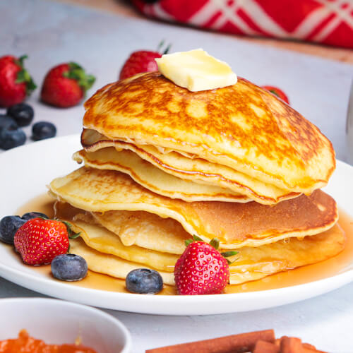

Simple pancake recipe
Welcome to the ultimate pancake experience! A easy and quick dish, perfect for anymeal. Our easy
to follow recipe guarantees light, fluffy pancakes all the time.
Preparation time
- Total: Approximately 10 minutes
- Preparation: 5 minutes
- Frying: 5 minutes
Ingredients
- 1 cup all-purpose flour
- 2 tablespoons sugar
- 1 teaspoon baking powder
- 1/2 teaspoon baking soda
- 1/4 teaspoon salt
- 3/4 cup buttermilk
- 1/4 cup milk
- 1 large egg
- 2 tablespoons melted butter
Instructions
- In a large mixing bowl, whisk together flour, sugar, baking powder, baking soda, and salt.
- In a separate bowl, combine buttermilk, milk, egg, and melted butter. Mix well.
- Pour the wet ingredients into the dry ingredients and stir until just combined.
Do not overmix; a few lumps are okay.
- Heat a griddle or non-stick skillet over medium heat. Grease lightly with butter
or cooking spray.
- Pour 1/4 cup of batter onto the griddle for each pancake. Cook until bubbles
form on the surface, then flip and cook until golden brown.
- Serve with your favorite toppings like maple syrup, fresh fruit, or whipped cream.
Nutrition
The table below shows Nutritional values per serving without the additional fillings
| calories |
277kcal |
| carbs |
0gb |
| proteins |
20g |
| fats |
22g |